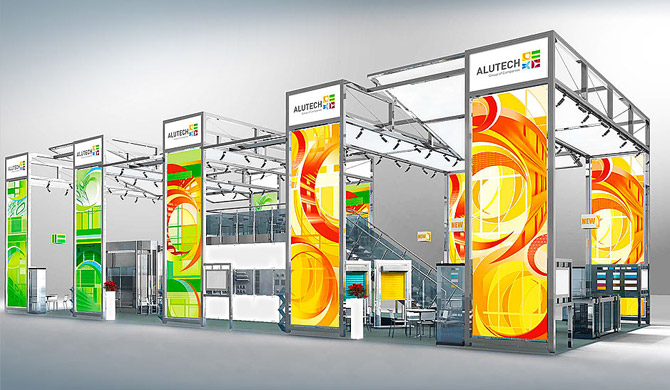

Наглядно, лаконично, чрезвычайно емко и полезно о встроенном коробе расскажет новый рекламно-информационный плакат, выполненный с использованием 3D-графики. Для знакомства с его содержанием не понадобятся даже специальные 3D-очки!s
Яркий плакат, размещенный на стенах офисов и демонстрационных залов, не только привлечет внимание конечных потребителей, но и даст любому читателю полное представление о продукте, его преимуществах и удобстве использования роллетных систем со встроенным коробом.
Читать далееПростота программы AluPRO гарантирует пользователям максимально быструю работу в системе. Ввод элементов охватывает окна, двери, фасады любого размера и вида. Шаг за шагом вы определяете свойства каждого элемента. Программное обеспечение ведет вас через весь конструкторский процесс таким образом, чтобы не забыть ни об одной детали.
В базу данных программы AluPRO внесены нормы статики многих стран, поэтому нормы статики для своего региона можно задать из базы данных программы или ввести самостоятельно.
Внесение в чертеж изоляционных и листовых материалов, утеплителя, вспомогательных линий и других элементов производится быстро и легко. Элементы чертежа могут быть выбраны и изменены. Автоматически присваиваемые описания ассоциативно изменяются вместе с элементами.Внесение в чертеж изоляционных и листовых материалов, утеплителя, вспомогательных линий и других элементов производится быстро и легко. Элементы чертежа могут быть выбраны и изменены. Автоматически присваиваемые описания ассоциативно изменяются вместе с элементами.Внесение в чертеж изоляционных и листовых материалов, утеплителя, вспомогательных линий и других элементов производится быстро и легко. Элементы чертежа могут быть выбраны и изменены. Автоматически присваиваемые описания ассоциативно изменяются вместе с элементами.
Использование блоков и слоев дополняет возможности программы. Внешние CAD-приложения, такие как AutoCAD, могут запускаться через интерфейс программы. Сечения фасадных конструкций создаются быстро и легко с помощью специальных инструментов. Сечения конструкций, созданных в AluPRO, легко загружаются в СAD-систему из модуля создания сечений.
На печать К списку новостей